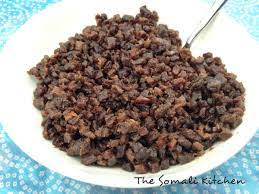

Odkac

Description
Odkac is jerky-style beef cubes. It is a Somali meat dish that lasts a long time if stored correctly. The best meat is camel meat. Unfortuenately, that is not availabe in the UK. So, alternatively we use beef steak. We usually just ask our butcher to cut the steak into oodkac.
Ingredients
- 1 kg Odka meat beef steak or comel steak, cut into odkac
- 1 tablespoon Salt.
- 1 tablespoon Xawaash (Somali Spice).
- 1/2 tablespoon Cardamom powder.
- 1 medium onion sliced evenly.
- 3 cups of Vegetable oil.
Instructions
- In a pot, on high heat, add the meat and keep stirring so it does not stick to the bottom. Do not cover the pot.
- Once the meat has started to produce its juice add the salt and spice powder. Let the meat cook, on high heat. Do not cover the pot otherwise it will produce a lot more juice.
- When the juice is almost gone (like only 1/4 cup left), pour out the meat into a bowl, with the juice.
- In the same pot, add the vegetable oil.
- When the oil is hot, add the onions and fry until it is brown. This step is mainly to flavour the meat. Keep stirring the onions so it browns evenly.
- Once the onion has browned evenly, use a perforated spoon and remove it all from the pot.
- Using the perforated spoon, scoop the meat into the hot oil. Do not add the leftover juice at this stage, just the meat.
- Keep stirring gently to make sure the meat is cooked evenly, otherwise only one side will be brown and the other won’t. When stirring do it gently.
- Just when the meat is brown add the juice (just for flavour). Keep stirring the meat gently.
- When the meat is starting to become dark brown add the cardamom powder and stir a few times gently.
- Switch the heat off when the meat is very brown. Do not wait for it to be black because the meat will become darker as it cools down in the hot oil.
- Once the meat has cooled down completely, use the perforated spoon to scoop out the meat into a storage container with a lid.
- Leave the oil in the pot, but put the pot in a slanted position. That will allow the oil to separate from the leftover brown stuff from the meat.
- When the oil has separated pour it carefully in the storage container that has the odkac.
- Store in a cool dry place.
- When scooping out the odkac use a spoon, do not allow your hands to touch the meat. This also means not putting leftover odkac from your plate back into the storage container.